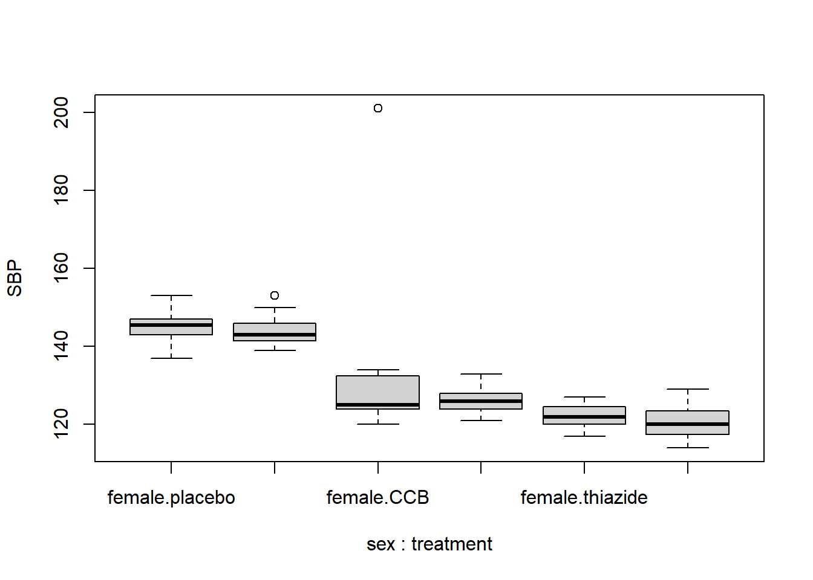
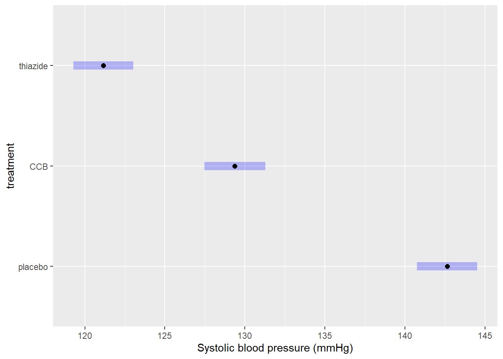

Tutorial 3 ANOVA
A method test to compare any number of means to see if they differ significantly. Observations are assumed to be independent, deviations from the group means are assumed to follow a normal distribution, and groups are assumed to have equal variance.
Summary
- Read the data into R ;
- Visualize the data;
- Fit an ANOVA:
- Perform visual diagnostics to look for deviations from the assumptions;
- Perform an omnibus test if the assumptions appear reasonable;
- Perform a post-hoc test if the omnibus test was significant;
- Report a conclusion;
- Incorporating this in scientific literature.
You can download the tutorial here and the required data set here.
3.1 Read the Data into R
I recommend saving data as comma-separated values (CSV). If you prefer reading data directly from Excel, have a look here.
Details
- Save the data in a folder;
- Open RStudio and create a new R markdown file; (File > New File > R Markdown)
- Save your R markdown file to the same location as the data;
- Set working directory to source file location. (Session > Set Working Directory > To Source File Location)
DF <- read.csv("three-groups.csv")Did that work? There are several ways to check:
str(DF)
summary(DF)
head(DF)Explanation of the output
str(DF)## 'data.frame': 90 obs. of 4 variables:
## $ SBP : int 122 119 120 129 127 118 120 124 126 117 ...
## $ treatment: chr "thiazide" "thiazide" "thiazide" "thiazide" ...
## $ age : int 32 34 36 41 35 38 36 33 39 32 ...
## $ sex : chr "female" "female" "female" "male" ...This command shows the structure of the data. It is a data frame with \(n = 60\) observations of 4 variables. SBP and age are stored as integers (int), while treatment and sex are stored character vectors (chr).
## SBP treatment age sex
## Min. :114.0 Length:90 Min. :23.00 Length:90
## 1st Qu.:122.0 Class :character 1st Qu.:32.00 Class :character
## Median :127.0 Mode :character Median :35.00 Mode :character
## Mean :131.5 Mean :35.69
## 3rd Qu.:142.0 3rd Qu.:38.00
## Max. :201.0 Max. :83.00## SBP treatment age sex
## 1 122 thiazide 32 female
## 2 119 thiazide 34 female
## 3 120 thiazide 36 female
## 4 129 thiazide 41 male
## 5 127 thiazide 35 female
## 6 118 thiazide 38 femaleMy output looks different
Then provided you did everything else correctly, the most likely reason is that your data was saved with a version of Excel where a comma is used as a decimal separator (e.g., the Dutch version). The solutions for this is simple, use read.csv2:
DF <- read.csv2("some-data-with-commas.csv")Common mistakes
- Remember to include the file extension (e.g., “two-groups.csv”) when typing the file name.
- You cannot read Excel files (.xls, .xlsx) with this function. Instead, follow the guide here, or save your data as CSV.
- Don’t open the CSV file with Excel. You don’t need Excel or Google Sheets or any other program besides R and RStudio. If you have saved your data as CSV, you can close Excel.
The next step is to ensure categorical variables are read as factors. This will allow us to use generic functions like plot and summary in a more meaningful way.
Why not just use character?
A character vector is just strings of text, numbers and/or symbols. If you were to produce a summary, this happens:
summary(DF$treatment)## Length Class Mode
## 90 character characterIt tells us this object contains 60 values, and it is stored and treated as a string of text.
The generic plot function doesn’t even work at all:
plot(SBP ~ treatment, DF)Error in plot.window(...) : need finite 'xlim' values
In addition: Warning messages:
1: In xy.coords(x, y, xlabel, ylabel, log) : NAs introduced by coercion
2: In min(x) : no non-missing arguments to min; returning Inf
3: In max(x) : no non-missing arguments to max; returning -InfNow convert the variables to factors and see how that changes the output.
(Run the code below, then run summary(DF$treatment), or plot(DF$treatment) for example.)
DF$treatment <- factor(DF$treatment)
DF$sex <- factor(DF$sex)Reordering a Factor
While it does not change any of the conclusions, it can help yourself and any readers if you put the groups in a logical order. For sex there is no logical order, but for treatment it would make sense to have the placebo first, as a reference to compare the other groups to.
To check the order of levels in a factor, use levels:
levels(DF$treatment)## [1] "CCB" "placebo" "thiazide"To change which treatment appears first, use relevel:
DF$treatment <- relevel(DF$treatment, "placebo")(Run levels(DF$treatment) again to see if it worked.)
Reordering multiple categories at once
If you want to change the order entirely, you can define the order manually as follows:
DF$treatment <- factor(DF$treatment, levels = c("placebo", "CCB", "thiazide"))Change the names of the categories
Careful, only use this if you know what you are doing. Check the order of labels first, using levels. It is easy to accidentally flip the labels of a factor and end up with nonsense.
If you want to rename the labels of a factor, for instance because you think the names are too long, you can do so as follows:
# Run this first, you have been warned
levels(DF$treatment)
# Change the names, taking into account the order of the labels above
DF$treatment <- factor(DF$treatment, labels = c("Ctrl", "CCB", "Thzd"))(Run levels(DF$treatment) again to see if it worked.)
3.2 Visualize the Data
In summary:
- Marginal boxplots cannot show combinations of variables;
- Grouped boxplots can show combinations of variables;
- A violin plot is an alternative to a boxplot.
boxplot(SBP ~ sex + treatment, DF)
What to look for
Potential Outliers
A boxplot shows either of the following:

Figure 3.1: What is displayed in a boxplot in case all observations are within a certain distance from the box (A), or otherwise (B).
The interquartile range (IQR) is simply the size of the box. If all observations lie within \(1.5\times\) this range from the box, then the whiskers show the extremes of the data (fig. 1.1 A). Otherwise, the observations are drawn separately 1.1 B). The IQR is usually not shown in a boxplot, but is used internally to calculate the location of the whiskers and marked observations (if any).
Marked observations are not outliers
This is a common misconception. Though it can be an indication of outlyingness, a boxplot alone cannot tell you whether these observations will strongly affect your analysis:
- If you have a large enough sample size, you will find more extreme observations, which are eventually drawn outside the IQR.
- Skewed values (see next section) will almost always show ‘outliers’ in the direction of skew, but these are unlikely to be outliers in the context of an appropriate model for skewed data.
- The \(1.5\times\) IQR rule is nothing special, it is merely convention. A boxplot is just a quick way to visualize numeric values.
Skew
Skew means the data-generating process follows a probability distribution that is not symmetric. In a boxplot, skew looks like this:

Figure 3.2: A boxplot of symmetric (A), right-skewed (B), and left-skewed values.
Skew is not necessarily a problem, unless it persists in the residuals of a model that assumes normally distributed errors. For an explanation of skew, see the video on probability distributions .
Differences Between Groups
A boxplot is not just a nice tool for yourself to inspect your data, but is also an effective tool to visually communicate the evidence for difference between groups:

Figure 3.3: A comparison of systolic blood pressure for different treatments and sex.
From the plot you can conclude:
- There appears to be a clear outlier in the female CCB group;
- None of the groups appear skewed;
- Both the CCB and thiazide group have substantially lower blood pressure than the control, with thiazide appearing the lowest;
- This difference appears to be similar for males and females;
- Systolic blood pressure does not appear to differ by sex at all;
- The variance of all groups is similar, because the boxes are similarly sized (ignoring the group with an outlier).
This is just a sample, so whether this difference is significant, should be determined with a test.
How to improve your plot
Some basic adjustments that improve any plot:
- Use informative axis labels, with unit of measurement if appropriate;
- Add an informative caption;
- Keep the numbers on the axes horizontal where possible;
- Remove unnecessary plot elements, like the box around the figure.
The changes to the code I made below can all be found in the help pages ?boxplot and ?par. I am also a big fan of the eaxis function from the package sfsmisc. The caption is added as a chunk option (i.e., ```{r, fig.cap = "..."}).
# Load a package for nice axes
library("sfsmisc")
# Change the margins (bottom, left, top, right)
par(mar = c(4, 4, 0, 0) + 0.1)
# Define the locations (helps discern between combinations of groups)
where <- c(1:2, 4:5, 7:8)
# Create the coordinate system
boxplot(SBP ~ sex + treatment, DF, at = where, axes = FALSE,
ylim = c(110, 200),
xlab = "Treatment", ylab = "Systolic blood pressure (mmHg)")
# Add axes
axis(1, c(1.5, 4.5, 7.5), levels(DF$treatment))
eaxis(2)
# Add a lightgrey background
polygon(x = c(-1, 9, 9, -1, -1), y = c(100, 100, 210, 210, 100), col = "grey95")
# Add a simple grid
abline(h = seq(100, 200, 10), col = "white", lwd = 1)
abline(h = seq(100, 200, 20), col = "white", lwd = 1.5)
# Redraw the boxplots on top
boxplot(SBP ~ sex + treatment, DF, at = where, axes = FALSE,
boxwex = 0.25, staplewex = 0, col = "steelblue", add = TRUE,
pch = 19, cex = 0.5, lwd = 2, lty = 1)
# Restore the default margins for subsequent plots
par(mar = c(5, 4, 4, 3) + 0.1)
Figure 3.4: A comparison of systolic blood pressure for three groups.
Alternative: Violin plot
A more modern take on the boxplot is a violin plot. It combines a boxplot and a density plot. This type of visualization is richer in information than just a boxplot, but it is only meaningful if you have enough observations per group (e.g., >10):
library("vioplot") # install if missing
vioplot(SBP ~ treatment, DF)
How to interpret a violin plot
Here is a breakdown of the components shown in a violin plot:

The density plot, if you are unfamiliar with it, is like a continuous version of a histogram. It shows which values are more and less likely in the sample.